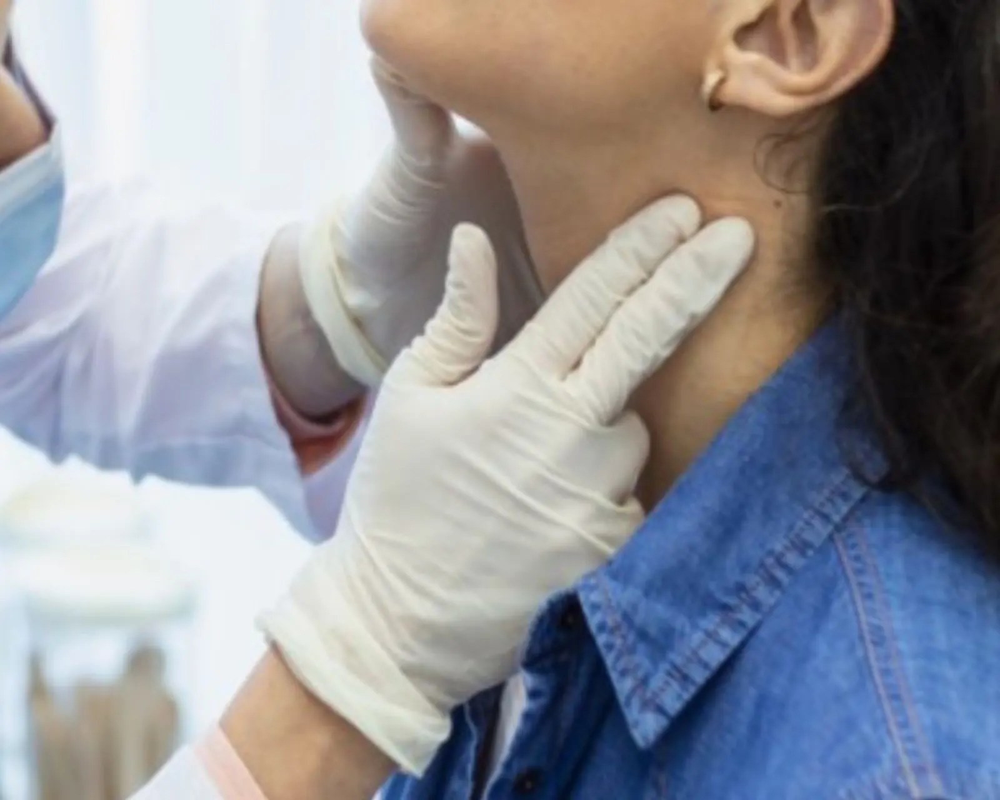

Consultation endocrino
Examen, anamnèse, prescription bilan biologique adapté.
Endocrinologie à Oujda : diabète, thyroïde, hormones, ménopause, ostéoporose. Consultation endocrinologue à la Clinique Achifaa Oujda. Bilans hormonaux complets.

L'endocrinologie est la médecine des glandes hormonales : pancréas (diabète), thyroïde, surrénales, hypophyse, ovaires. À la Clinique Achifaa Oujda, l'endocrinologue assure suivi personnalisé du diabète, exploration des nodules thyroïdiens, prise en charge de l'obésité avec approche nutritionnelle.
L'avantage de notre plateau intégré : tous les bilans hormonaux complexes (T3, T4, TSH, ACTH, cortisol, IGF1, FSH, LH, estradiol, testostérone, prolactine) sont réalisés sur place, avec résultats sous 24 à 48h.
Les pathologies les plus souvent prises en charge en endocrinologie à la Clinique Achifaa Oujda.
Tous les examens nécessaires sont réalisés sur le même site, avec un dossier médical centralisé.
Examen, anamnèse, prescription bilan biologique adapté.
TSH, T4L, T3L, anticorps anti-TPO et anti-TG.
Évaluation des nodules, classification EU-TIRADS.
Suivi du diabète sur 3 mois.
Diagnostic de diabète et prédiabète.
Mesure de la densité osseuse (en partenariat).
En ligne, par téléphone ou WhatsApp en moins de 2 minutes.
Notre secrétariat confirme la date et l'heure sous 24 heures ouvrées.
Examen clinique complet par un spécialiste senior, examens si besoin.
Plan de soins personnalisé, ordonnance, RDV de contrôle planifié.
| Adresse | Quartier Hay Salam, Oujda 60000, Région de l'Oriental, Maroc |
|---|---|
| Téléphone | +212 5 36 70 00 00 |
| +212 5 36 70 00 00 | |
| Horaires consultations | Lundi à samedi · 8h00 – 20h00 |
| Urgences | 24h/24 · 7j/7 |
| Assurances acceptées | CNSS, CNOPS, RMA, Saham, AXA, mutuelles partenaires |
| Modes de paiement | Espèces, carte bancaire, chèque, virement, tiers-payant |
| Parking | Parking gratuit sur place |
Vous ne trouvez pas votre réponse ? Contactez-nous au +212 5 36 70 00 00 ou via WhatsApp.
Le dépistage du diabète repose sur la glycémie à jeun (≥ 1.26 g/L à 2 reprises) ou l'hémoglobine glyquée (HbA1c ≥ 6.5 %). À la Clinique Achifaa, ce bilan peut être réalisé à toute heure de la journée. Un dépistage est recommandé : tous les 3 ans après 45 ans, ou plus tôt en cas de surpoids, antécédents familiaux, antécédent de diabète gestationnel.
Un nodule thyroïdien est une formation localisée dans la glande thyroïde, fréquente (40 % des adultes). 95 % sont bénins. Le bilan inclut : examen clinique, TSH, échographie thyroïdienne (classification EU-TIRADS), parfois cytoponction sous échographie. Une chirurgie n'est proposée qu'en cas de nodule suspect, compressif ou volumineux.
Le diabète type 2 peut être mis en rémission chez certains patients, notamment ceux récemment diagnostiqués avec un excès de poids significatif. La perte de 10 à 15 kg (par régime, activité physique ou chirurgie bariatrique) permet souvent de normaliser la glycémie sans médicaments. Un suivi endocrinologique régulier est nécessaire pour adapter le traitement.
Une ostéodensitométrie (DEXA) est recommandée chez la femme à partir de 65 ans, ou plus tôt en cas de ménopause précoce, fracture de fragilité, traitement par corticoïdes, hyperthyroïdie, antécédents familiaux. Chez l'homme : à partir de 70 ans ou après fracture suspecte. Le résultat (T-score) guide le traitement (calcium, vit D, bisphosphonates).